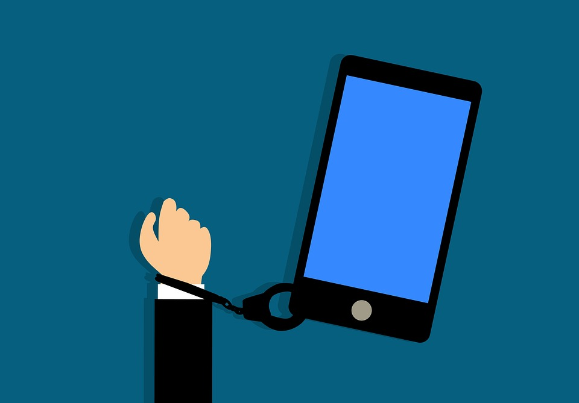
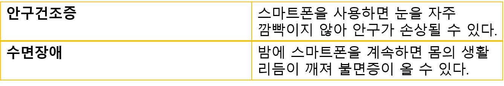

스마트폰 중독1.스마트폰 중독의 개요스마트폰 중독이란 인터넷을 무리하게 사용하여 생기는 중독 질환이다.
2. 스마트폰 중독 증상스마트폰 중독의 증상으로는 다음과 같다.
스마트폰 중독 예방 및 치료 방법으로는 다음의 방법이 있다.
1. 스마트폰 사용 시간을 정해놓고 사용하여 무리한 사용을 줄인다.
2. 스마트폰 중독을 줄이기 위한 도움이 되고 뚜렷하고 달성 가능한 목표를 설정합니다.
3. 주변 사람들에게 나의 스마트폰 사용 패턴을 물어보고 고칠 점을 알아보고 실천합니다.
출처 : http://slides.com/billymeinke/caltrain-bikes/fullscreen#/
출처 : 네이버 지식백과
배경사진 출처 : https://www.sktinsight.com/49424
돌아가기